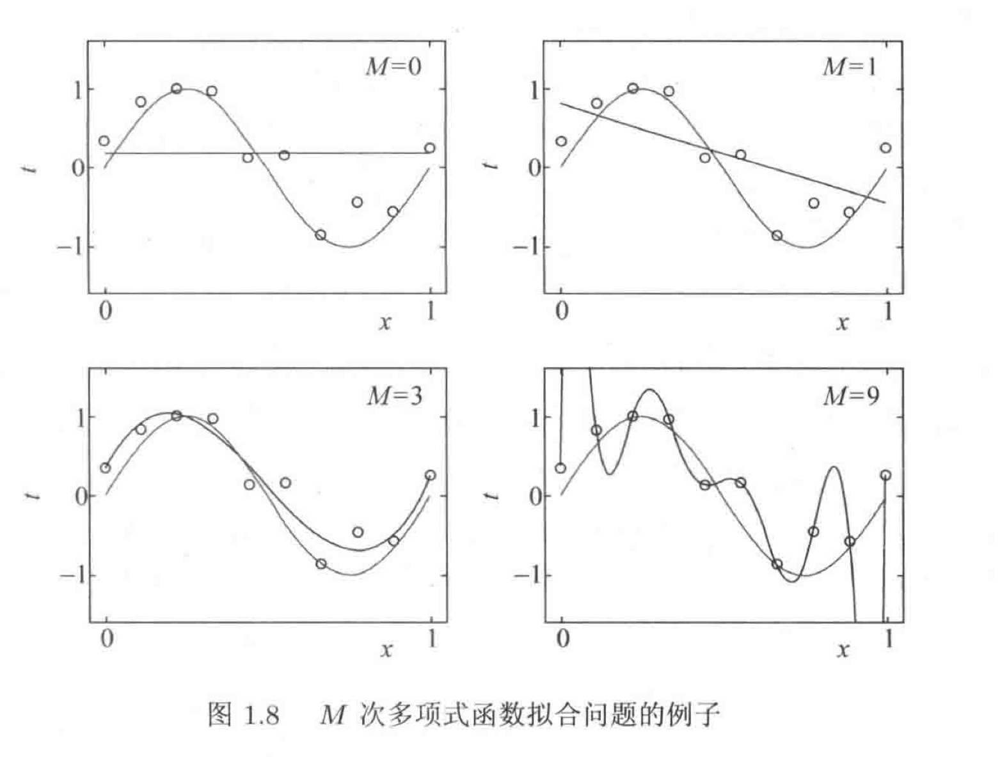
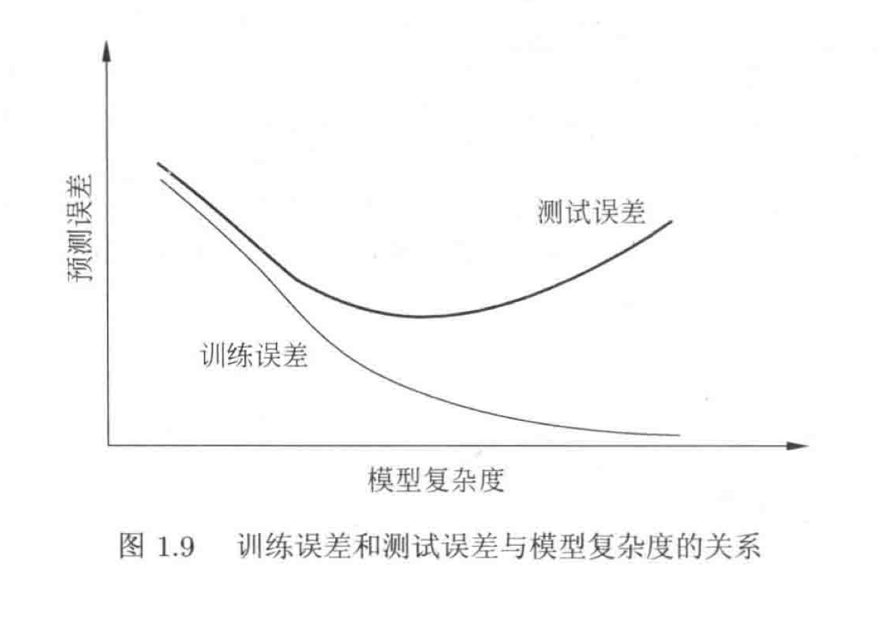
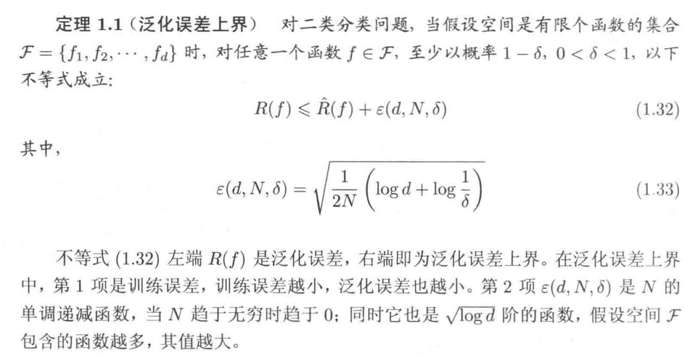
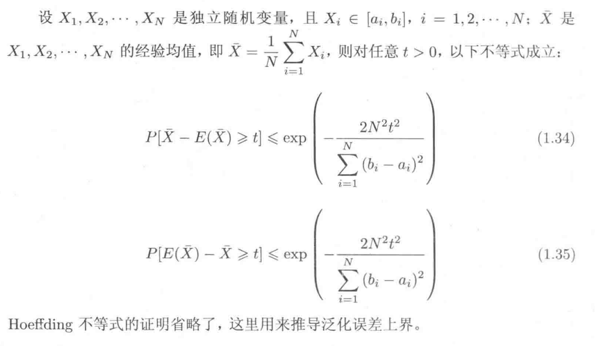
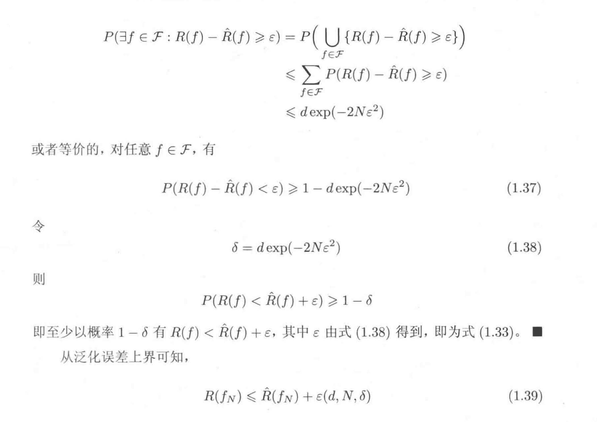

统计学习的特点：
- 统计学习以计算机及网络为平台，建立在计算机及网络上
- 统计学习以数据为研究对象，是数据驱动的学科
- 统计学习的目的是对数据进行预测与分析
- 统计学习以方法为中心，构建模型并对模型进行预测与分析
- 统计学习是概率论、统计学、信息论、计算理论、最优化理论及计算机科学等多个领域的交叉学科
| 赫尔伯特\(·\)西蒙 (Herbert A.Simon) 曾对学习给出以下定义：“如果一个系统能够通过执行某个过程改进它的性能，这就是学习。” |
统计学习的对象：数据
它从数据出发，提取数据的特征，抽象出数据的模型，发现数据中的知识， 回到对数据的分析和预测中去。
统计学习中对数据的基本假设：同类数据具有一定的统计规律性，这是统计学习的前提。
统计学习的目的：用于对数据的预测和分析，特别是对未知数据的预测与分析。
考虑两点
- 学习什么样的模型
- 如何学习模型
★ 统计学习方法：从给定的、有限的、用于学习的训练数据集和出发，假设数据是独立同分布产生的；并且要学习的模型属于某个函数的集合(假设空间)
一、包括三点，三要素
- 模型的假设空间（模型model）
- 模型选择的准则（策略strategy）
- 模型学习的算法（算法algorithm）
| 如果最优化问题又显式的解析解，这个最优化问题就比较简单。但通常解析解不存在，就需要用数值计算的方法求解。如何保证找到全局最优解，并使求解的过程非常高效，就成为一个重要问题。 |
二、损失函数与风险函数**
\(0\)-\(1\)损失函数（\(0\)-\(1\) loss function）
\[\displaystyle{L(Y,f(X))=\begin{cases}1 & Y\neq f(X) \\ 0 & Y= f(X)\end{cases}}\]
平方损失函数（quadratic loss function）
\[\displaystyle{L(Y,f(X))=(Y-f(X))^2}\]
绝对损失函数（absolute loss function）
\[\displaystyle{L(Y,f(X))=|Y-f(X)|}\]
对数损失函数（logarithmic loss function）
\[\displaystyle{L(Y,f(X))=-\log P(Y|X)}\]
损失函数值越小，模型就越好，下面是损失函数的期望值：
\[\displaystyle{R_{exp}(f)=E_P[L(Y,f(X))]=\int_{\Chi * \Upsilon}L(y,f(x))P(x,y)dxdy}\]
理论上模型\(f(X)\)关于联合分布\(P(X,Y)\)的平均意义下的损失，成为
风险函数或期望损失，学习目标就是选择期望风险最小的模型
三、经验风险最小化与结构风险最小化
经验风险是模型关于训练样本集的平均损失，根据大数定理，样本容量\(N\)趋于无穷大时经验风险\(R_{emp}(f)\)趋于期望风险\(R_{exp}(f)\)，但现实是训练样本有限，所以经验风险估计期望常常并不理想，要对经验风险进行一定矫正。
这就关系到监督学习的两个基本策略：经验风险最小化和结构风险最小化。
经验风险最小化
当模型是条件概率分布、损失函数是对数损失函数、经验风险最小化就等价于极大似然估计。
\[\displaystyle{R_{emp}(f)=\cfrac{1}{N}\quad\sum_{i=1}^{N}L(y_i,f(x_i))}\]
结构风险最小化
结构分概念最小化等价于正则化（regularizer）。
结构风险在经验风险上加上表示模型复杂度的正则化（regularizer）或罚项（penalty term）。
\[\displaystyle{R_{emp}(f)=\cfrac{1}{N}\quad\sum_{i=1}^{N}L(y_i,f(x_i)) + \lambda J(f)}\]
其中\(J(f)\)为模型复杂度，模型\(f\)越复杂，复杂度\(J(f)\)就越大；\(\lambda \geqslant0\)是系数，用以权衡经验风险和模型复杂度。
统计学习的研究
- 统计学习方法的研究旨在开发新的学习方法
- 统计学习理论的研究在于探求统计学习方法的有效性与效率，以及统计学习的基本理论问题
- 统计学习应用的研究主要考虑将统计学习方法应用到实际问题中去，解决实际问题
模型评估与模型选择
当损失函数给定时，基于损失函数的训练误差和模型的测试误差就成为学习方法的评估标准。
过拟合问题：如果一味提高测试数据的预测能力，就可能导致过拟合问题。具体体现在学习是选择的模型参数过多，对已知的测试数据预测效果很好，但对于未知数据预测结果很差。

如果在假设空间中存在“真”模型，那么所选模型要与真模型参数个数相同，参数向量与真模型的参数向量相近。
对于测试误差，会随着模型复杂度先减小，达到最小之后又增大

正则化验证与交叉验证
两种用于选择模型的方法
其中正则化验证是结构风险最小化策略的实现，正则化符合奥卡姆剃须刀原理：在所有可能选择的模型中，能够很好解释已知数据并且十分简单的才是好模型。
另一种常用的是交叉验证，对于给定的样本，将其随机切分成三部分，分别是训练集（训练模型）、验证集（选择模型）、测试集（评估模型）。基本思想是重复使用数据，可以应对实际问题中数据不足的问题。
一、交叉验证的三种类型
简单交叉验证
例如在\(MNIST\)分类问题中将样本随机分成两部分、测试集（\(30\%\)）与训练集（\(70\%\)）。
\(S\)折交叉验证
将数据切分成\(S\)个互不相交、大小相同的子集，利用\(S-1\)个子集数据进行训练，用余下的数据测试模型；将这一过程进行\(S\)次重复选择，最后选出评价误差最小的模型。
留一交叉验证
是\(S\)折交叉验证的特殊情形（\(S=N\)），往往在数据缺乏的情况下使用。
泛化误差
泛化是指模型对未知数据的预测能力，泛化误差反映了学习方法的泛化能力。事实上，泛化误差就是所学到模型的期望风险。\(\displaystyle{R_{exp}(\hat{f})=E_P[L(Y,\hat{f}(X))]=\int_{\Chi*\Upsilon}L(y,\hat{f}(x))P(x,y)dxdy}\)
泛化误差上界，假设空间越大，模型越难学习，泛化误差上界越大
对于\(f_N\)的泛化能力，\(R(f_N)=E[L(Y,f_N(X))]\)

- \(Hoefffding\)不等式


生成模型与判别模型
监督学习方法又可以分为生成方法（generative approach）与判别方法（discriminative approach），所学到的模型分别为生成模型（generative model）与判别模型（discriminative model）。
- 生成方法由数据学习联合概率密度\(P(X,Y)\)，然后求出条件概率密度\(P(Y|X)\)，即生成模型\(\displaystyle{P(Y|X)=\cfrac{P(X,Y)}{P(X)}}\)。
典型生成模型：朴素贝叶斯法，隐马尔可夫模型
特点：可以还原出联合概率密度，收敛速度快，当存在隐变量时仍然可以使用
- 判别方法直接学习决策模型\(f(X)\)或者条件概率密度\(P(Y|X)\)，作为预测模型。
典型判别模型：\(k\)近邻法、感知机、决策树、逻辑斯蒂回归模型、最大熵模型、支持向量机、提升方法、条件随机场等
特点：准确率更高，方便对数据进行各种程度上的抽象，定义特征并使用特征，简化学习问题
监督学习应用
分类问题
标注问题（隐马尔可夫模型，条件随机场）
回归问题
用于预测输入变量和输出变量之间的关系，当输入发生变化时，输出值随之发生变化。 回归模型正是输入变量到输出变量之间的映射函数，等价于函数拟合。
- 根据输入变量个数分为一元回归和多元回归；按照所拟合函数类型分为线性回归和非线性回归。
- 最常用的是平方损失函数，可以用最小二乘法求解。